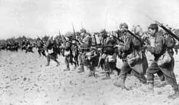

< < < Back
5 More Ancient Tactics For Modern Combat – Return Of Kings
As the political situation in the United States (and really the Western world on the whole) continues to deteriorate, and street fighting paramilitary groups have begun to affect political change through violence, I feel that it is prudent for all of us to learn how to fight, not only individually but in hand to hand units as well. And, several months ago, I did give you an introduction to a few tactics for street fighting.
But, as any classicist knows, our forefathers had just as much tactical diversity as the military strategists of today. And so, bearing in mind that I do not condone using these tactics for purposes of aggression, here are a few more hand-to-hand tactics that were used by ancient warriors, and still are used by riot police today:
1. The Inverted Wedge
The flying wedge discussed in the first article, of course, is a formation in which the unit forms a metaphorical “spearhead” to penetrate into the enemy’s lines. The inverted wedge is essentially the exact opposite of that: two units stand abreast from each other, and successive units extend from behind those first two, culminating in a point—in other words, you march as V with the “opening” of the V going towards the enemy.
This formation is very useful for encircling some sort of tactical objective ie: enemy combatants, as famously shown at the Battle of Cannae.
You can combine the inverted wedge with…
2. Kettling
Kettling, also known as corraling, is a tactic often used by police to control large crowds. Essentially, it involves a large cordon of officers who surround the enemy combatant, and then move towards each other or in a given direction, pushing the crowd to whatever place the police want them to go.
Bear in mind that this tactic requires you to have a large manpower advantage over your opponents—but also remember that a mere manpower advantage does not guarantee victory if you are all running about willy-nilly
3. The Testudo
Recalling the shield wall from the first article as the most basic ancient infantry tactic, the testudo, created by our friends in Ancient Rome, represents the inevitable evolution of it.
Begin by forming a shield wall (tower shields work best), and then have a back rank of people place their shields over the heads of themselves and the people in front of them.
As you can imagine, this is largely a defensive formation—the positions of both ranks makes movement slow and cumbersome, and as I highly advise NOT to use spears, none of the ranks can really attack the enemy either.
I would recommend training this in conjunction with the shield wall: train to form this formation quickly to protect yourselves from projectiles, and then decamp to go on the attack. A failure to do this quickly led the Romans to several defeats, most notably the Battle of Carrhae in which they were pinned down by a combination of cavalry and archers in this formation and gradually worn down.
4. The Hollow Square
The hollow square is, again, vaguely similar to the shield wall and the testudo, with the main difference being that ranks of fighters form the shield wall in all directions, forming a square with an empty space in the middle.
This may be a bit difficult to visualize, so here is a picture:

The Battle of Waterloo. Note the bottom left corner, the British have formed a hollow square.
The hollow square in the middle can be utilized for a variety of purposes, such as auxiliary fighters, reserves, or logistical support—i.e.: medical providers, or people you are seeking to protect. And of course, you can combine the hollow square with the shield wall for added protection.
This tactic was on the cutting edge of military strategy from the Classical Era until the American Civil War, so it would behoove you to learn it.
5. The Human Wave
And of course, when all else fails, you can just form all of your men into a great thundering herd of humanity and point them at the enemy, with naught but elan and whatever weapons they’re armed with, in the hopes of overwhelming the enemy before they have time to hunker down and prepare for you.
As you might have elucidated from that paragraph, I wince whenever I hear of some military commander referring to “elan” or “esprit de corps”, because it’s inevitably being used in the context of “tactics, logistics, and strategy being REPLACED by elan”. Many who have read military histories feel the same way, and from what I have gathered, those who are or have been in the military are likely to feel even stronger about this than I do.
Indeed, it seems more likely that doing a human wave attack will get you commemorated as a noble, valiant failure. Or at least that’s the impression I get from Kipling
But, when I studied martial arts, my master told me that spinning hook kicks and other fancy moves were taught not necessarily for us to use, but for us to know how they worked so we could defend ourselves from OTHER people using them against us. Similarly, I feel that this cloddish tactic should be fully understood so it can be defended against. I’d recommend the tried and true shield wall.

And, most importantly, you must practice these formations repeatedly, just like anything else in life. As some commenters in the first tactics article pointed out, your average group of schlubs may not cotton to pseudo-military discipline, which is why somebody really ought to write an article on how to instill discipline—oh wait, somebody did.
Read More: 4 Ancient Tactics For Modern Streetfighting